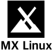

Choix de distribution Linux
Chaque lien ouvre une simulation avec le même noyau et le même contenu pédagogique partagé ; seules la présentation et les textes peuvent différer.
 Linux Mint (Cinnamon) — explorateur type Nemo
Linux Mint (Cinnamon) — explorateur type Nemo Ubuntu 25.10 — GNOME (Yaru), explorateur Fichiers
Ubuntu 25.10 — GNOME (Yaru), explorateur Fichiers- AnduinOS — GNOME (style Windows 11), barre des tâches, Nautilus
- Pop!_OS — COSMIC (base Debian)

MX Linux KDE — base Debian avec bureau KDE-like- Debian KDE (Plasma) — KDE Plasma (Dolphin), base Debian
 openSUSE Tumbleweed — KDE Plasma (Dolphin), base SUSE
openSUSE Tumbleweed — KDE Plasma (Dolphin), base SUSE- Fedora Workstation — GNOME, explorateur Fichiers (Nautilus)